|
Research and Interests
I'm interested in on pose estimation, object detection and tracking, image processing techniques for medical imaging and defense uses, optimization and energy landscape of neural networks, both artificial and biological, deep reinforcement learning, neuroscience limited to dynamics, plasticity and vision, how memory is accessed, stored and thoughts on Moravec’s Paradox.
Currently, I'm researching on using VAE's in hand pose estimation.
Along my studies, I have done social work, won some international competitions and have started writing a book! I am always looking for exciting research so feel free to get in touch.
|
| 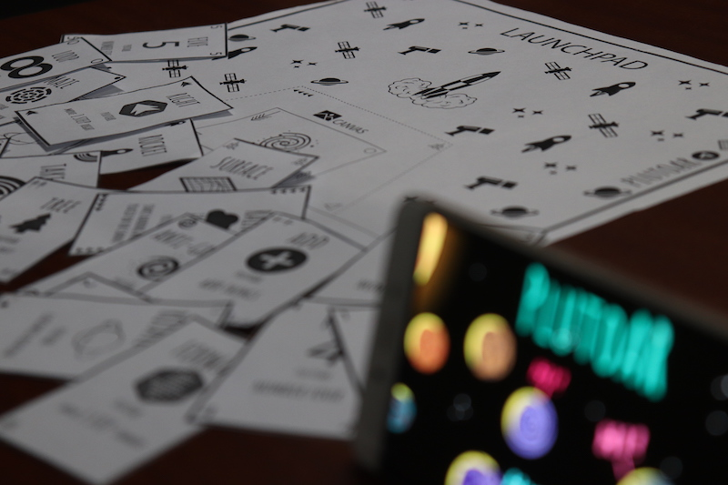 |
PlutoAR: An Augmented Reality Interpreter for Education
Shourya Pratap Singh, Ankit Panda, Susobhit Panigrahi, Ajaya K Dash
This entry won the 5000$ prize at UnitedByHCL Hackthon.
PlutoAR is an affordable, tangible Augmented Reality Interpreter for the K-10 Curriculum. The kit consists of a "Launchpad" where you place "tiles" to create programmable experience, observable using the Android app, such as taking off a rocket, navigating a maze using control loops and solving simple math.
|
| 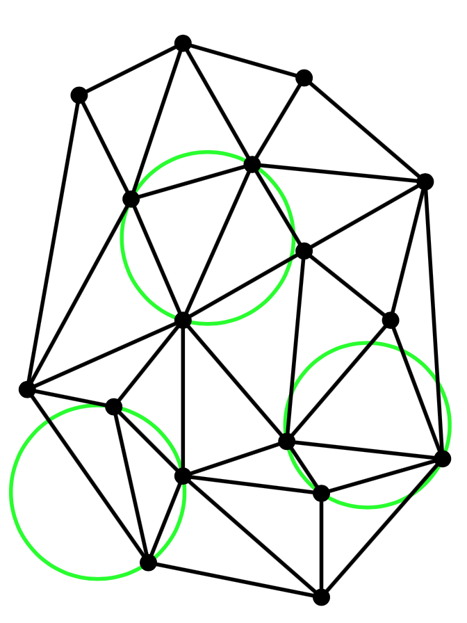 |
Delaunay Triangulation for Clustering High Energy Jet Particles.
Ankit Panda
Performed clustering of artificially generated jet particles ( ROOT ) by grouping them using Delaunay Triangulation through the CGAL library.
Also made created a test and perfomance analysis suite in Go for clustering.
The hyperlink goes to my tutorial on Delaunay Triangulation.
|
| 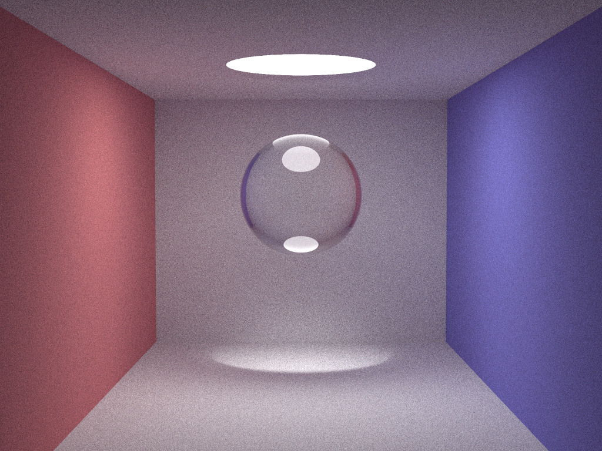 |
Raytracer using OpenGL
Ankit Panda
Made a minimal raytracer with Phong Blinn Shading Model using OpenGL.
|
| 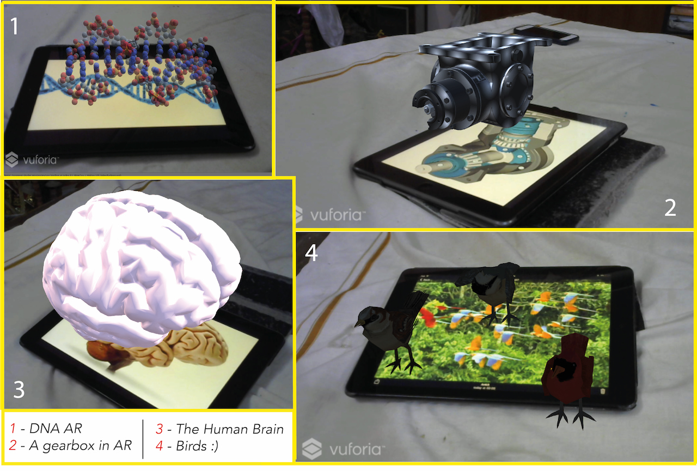 |
Augmented Reality Methods For Education
Ankit Panda
Awarded perfect score in institute, top 10% from 250 submissions.
This report raises questions about the condition of the Indian education system, details about school trips, psychology of children, reviews and discusses thoughts on AR as a supplement, a viable interactive solution to make classrooms more interactive.
|
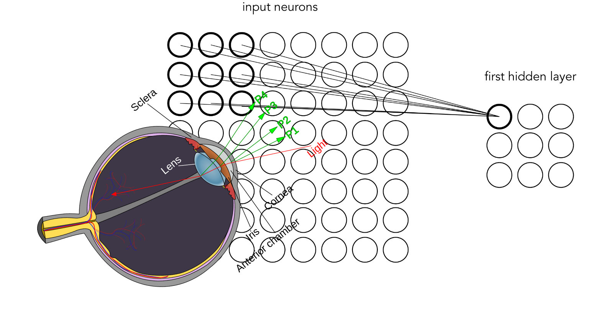 |
A Review on Convolutional Neural Networks for Eye Tracking
Ankit Panda, Shourya Pratap Singh
In our seminar report, we explain a novel way to track the eye using convolutional neural networks. We rely heavily on the research carried out by Krafka and Khosla on their paper titled, "Eye Tracking for Everyone", CVPR, 2016.
|
| 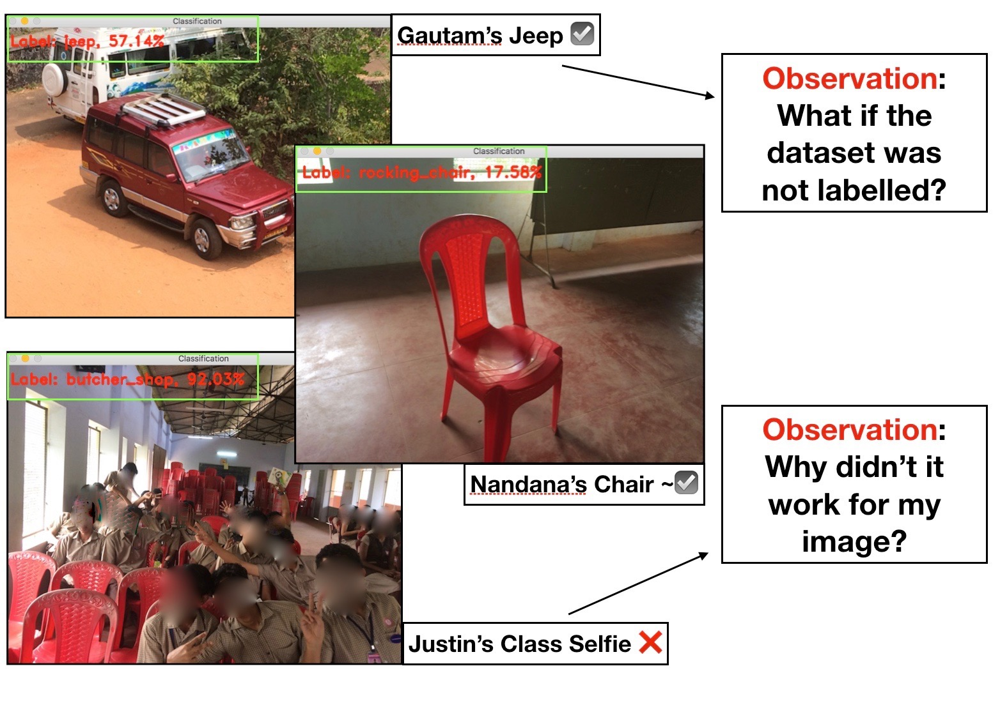 |
Mystery of the Future and Image Recognition Workshop
at SVS School, NITC, Kozhikode, India.
I gave a small talk about STEM and explained stuff about connectomes, SpaceX rockets and AI to student's in 9th and 10th standard.
I also conducted an image recognition workshop for 11th where they had to write code using keras for image detection using ResNet and VGGNet.
|
|
Expositions and Tutorials
|
| 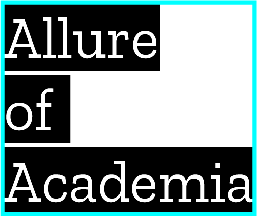 |
Allure of Academia
Ongoing Project, Ankit Panda
My new year resolution for 2018.
Noting down, explaining and making all of you folks understand an academic paper most efficiently.
In short, $ \operatorname{argmin}\text{(Papers)}$
|
| 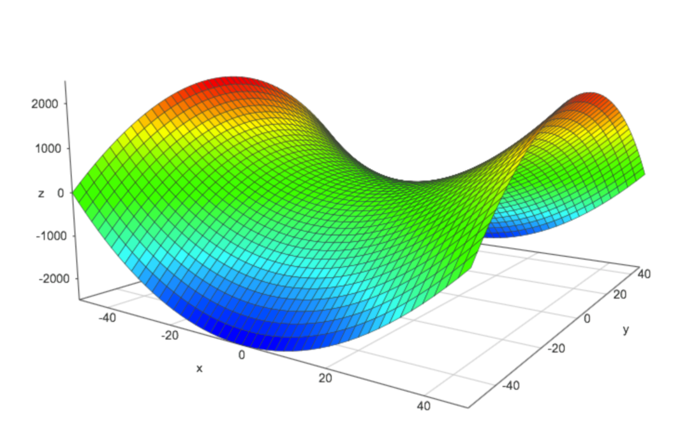 |
Geometrical Explorations of the Lagrangian Multipliers
Ankit Panda
A river bed, some beads and a 3D surface plot.
|
| 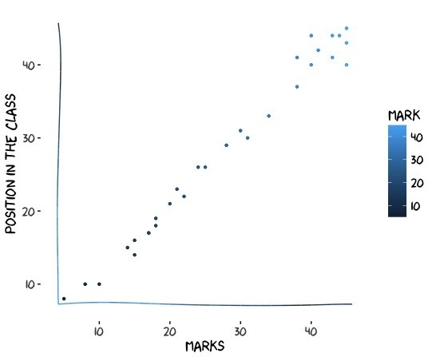 |
Engineering in India.
Critique Article, Ankit Panda
Finding out the discrimination of the grading system of India through plots of marks versus position of in the class.
|
| 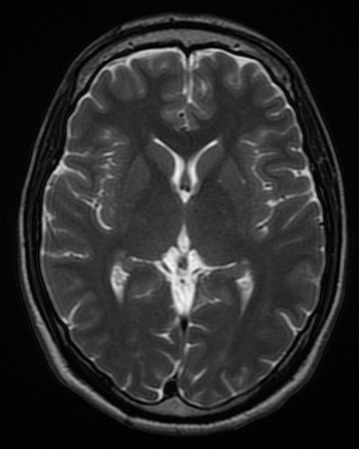 |
Some Other Kind of Love.
Non-Fiction, hyperlinked version 0.2 draft, Ankit Panda
We often search frantically for our answer which is most of time hidden in front of us. In this book (I hope it becomes a book) I will try to explore some of the most fundamental beliefs about emotions and connect the dots through science and mathematics.
Basically this book is for the artificial sentient beings in the future. I hope when they read this they will feel something, some other kind of love.
Thumbnail credit, CC-BY-4.0.
|
| 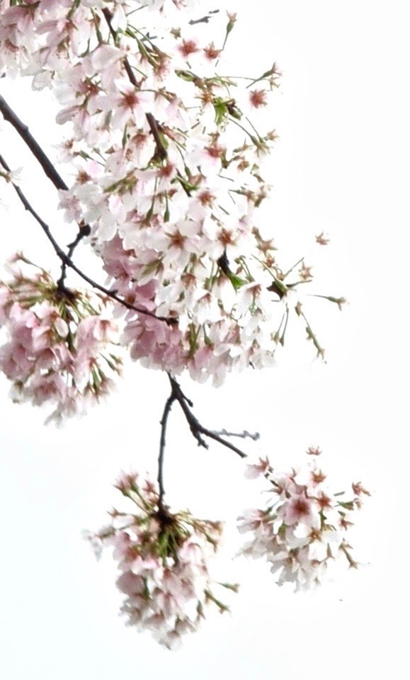 |
italics
Collected writings and poems, Ankit Panda
Subterfuge. I was worried about it. That someone whom I know would warp my conscience and subterfuge with it. It ain’t now so.
Believe. Bonding. Relations. The strong ones. The valiant sea that we sail. The mast that never breaks. The sails that fill their chests with pride. With you beside, I ain’t sinking anymore.
Telepathy. A hocus in most eyes. A wonder in some. A dream. Connecting still being far. The humanely inhuman power to know about someone not with you. About the person you care. I thought it was a bluff as science wasn’t sure. I ain’t thinking that now.
Pain. A multidimensional entity. That can’t be shared. Which is harsh. From which you can’t run away. You are stuck. I was stoic. It ain’t so now.
Friendship. A power from within the four chambered hearts. An emotion endless. A feeling of unity. The sunshine amidst the rain. I love it now.
|
|
{kind=link}